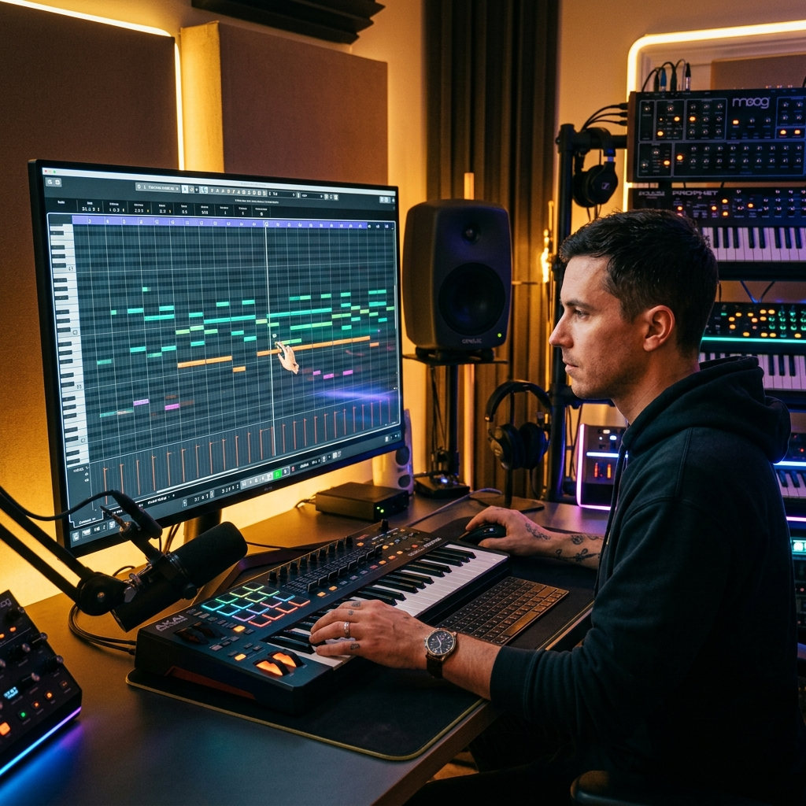

Ghost-track harmonic alignment
When one track is active, related tracks appear as translucent guides. This makes harmony writing and call-response phrasing precise across sections.

Lux Studio treats editing as a core stage, not an afterthought. You can place notes, bind syllables, align harmonic layers, and refine timing with deterministic behavior.
When one track is active, related tracks appear as translucent guides. This makes harmony writing and call-response phrasing precise across sections.
Snap options from 1/8 down to fine increments keep timing controlled. You can move quickly without introducing hidden timing drift.
Double-click per-note lyric entry plus bulk lyric binding helps keep diction in rhythm, so vocal phrasing sounds intentional instead of mashed.
Import external sketch ideas and export arrangements back to your DAW. This bridges AI ideation and traditional production workflows.
